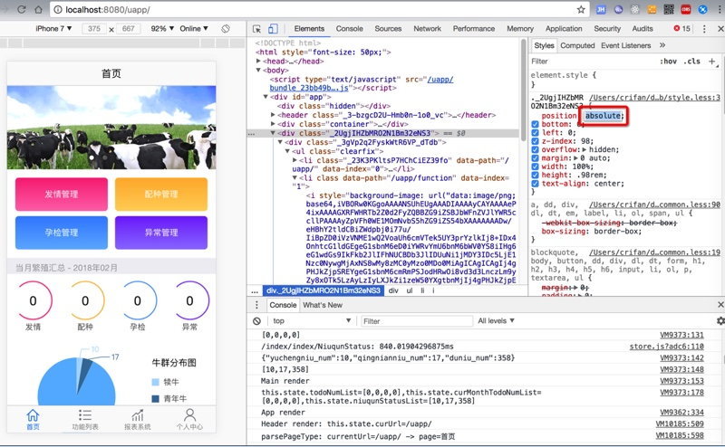
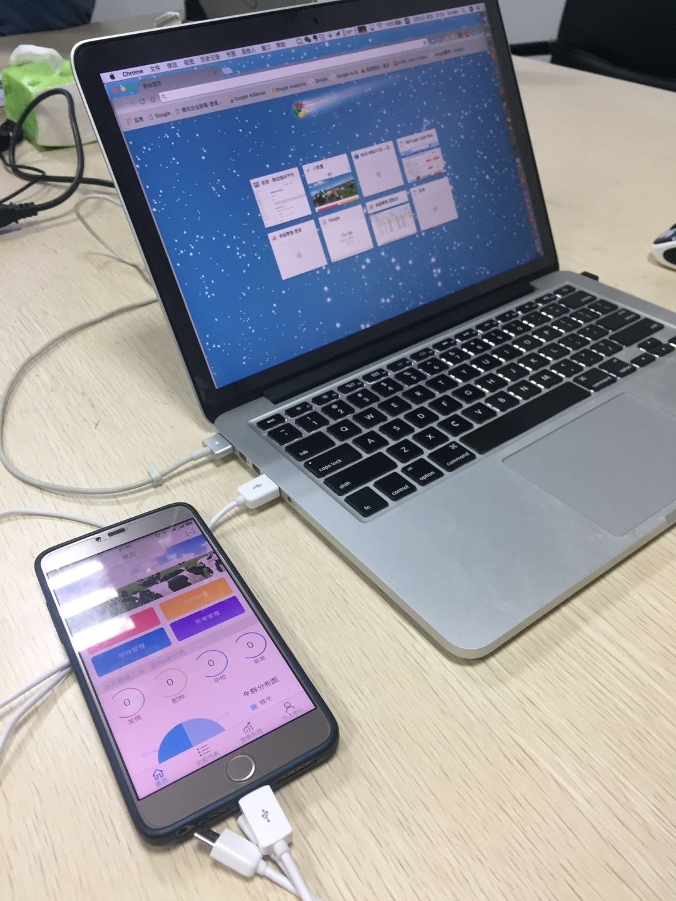
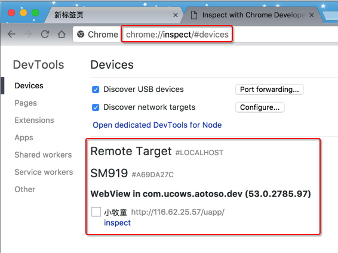
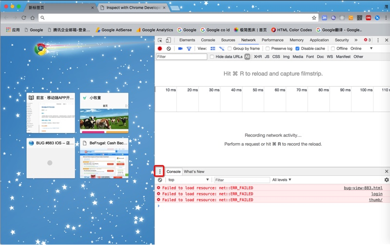
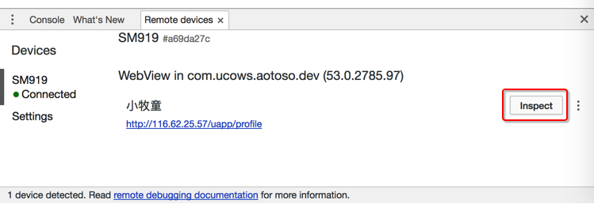
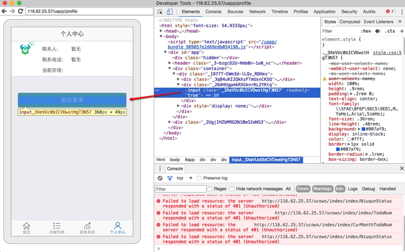
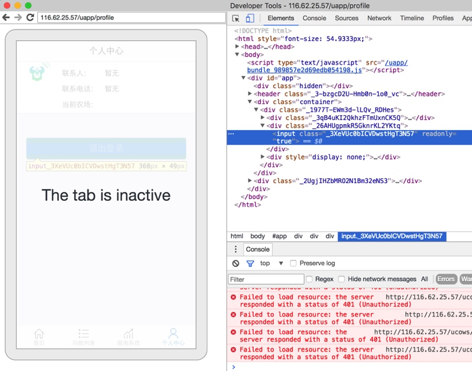

调试Android的Webview
对于Chrome来说，除了在电脑上用其调试网页，包括适配了移动端的H5页面，比如：

还可以用其来调试手机端的H5页面。
用Chrome在电脑端调试手机端APP内的Webview页面
比如在Mac上，也当然先要把Android的手机用USB数据线连接到电脑上：

然后先确保Android端打开你要调试的APP，把对应的包含了网页的界面打开，其内部是调用了Webview的内核打开的页面，比如：
然后去Mac中，打开：
Chrome -> 更多工具 -> 开发者工具：

然后即可打开调试页面：
然后对于打开远程设备去调试页面，有两种方式：
chrome://inspect中找到远程Android设备
直接Chrome中输入：
chrome://inspect
即可看到已插入电脑的Android手机中的App，包含对应的页面

点击Inspect即可开始调试。
console栏中Remote Devices
在开发者工具的Console栏中，点击三个点：

然后选择Remote devices：

然后，如果本身Android手机已经插入电脑了，则就可以看到：xxx Connected，比如此处的SM919 Connected：

其中SM919是锥子M1L的内部设备编号。
点击了connected的Android设备后，即可看到对应的设备和页面，点击Inspect：

即可去进去调试页面：
可以鼠标移动到html的元素，以便于查看详细参数，看看是否符合期望：

且调试效果是实时的：
- 当手机端切换页面时，PC端的页面内容也会立刻刷新
- 当此APP被切换到后台时，对应的页面会显示Inactive，表示处于没有激活的状态：
- 

如此，就可以愉快的，在电脑端(Windows/Mac)去调试(通过数据线连接到电脑的)远程Android手机端的APP内部的网页（内部是基于Webview的页面）了。